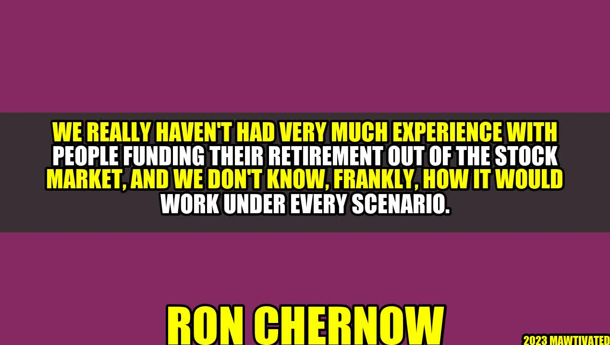

Investing in the Stock Market: Is it a Viable Option for Retirement?

Picture this: a retired couple, Ron and Ellen, spent their entire lives working hard to save for their retirement. However, they did not invest their money in the stock market as they believed it was too risky. Fast forward a few years, and they struggle to make ends meet. They realize that their savings are not enough to cover their expenses, let alone enjoy their golden years. That's when they decide to invest in the stock market and see their wealth grow exponentially, securing their financial future.
While this may seem like an inspiring story, the reality is that many people are hesitant about investing their retirement savings in the stock market. This is mainly because, historically, investing in stocks has been associated with risk and volatility. However, more recently, there has been a shift in the perception of investing in the stock market and its potential to fund retirement expenses.
Author - Ron Chernow
Ron Chernow, an American writer, has written extensively on topics related to finance and economics. He has written biographies on some of the most influential figures in banking and finance, such as J.P. Morgan and Alexander Hamilton. Chernow is known for his in-depth research and insightful commentary on the world of finance.
The Benefits of Investing in the Stock Market for Retirement
- Long-term Growth: Investing in the stock market can help you grow your wealth significantly over a long period. Historically, the stock market has produced an average annual return of around 10%, making it one of the best long-term investment options.
- Diversification: Investing in the stock market allows you to diversify your investment portfolio by investing in different sectors and companies. This reduces the risk of your portfolio and ensures that your retirement savings are protected against market volatility.
- Liquidity: Unlike some other investment options, stocks are liquid, meaning that you can easily sell them and access your funds when needed.
- Tax Benefits: Certain types of investment accounts, such as IRAs and 401(k)s, offer tax benefits that can help you minimize your tax liability and keep more of your retirement savings.
The Risks of Investing in the Stock Market for Retirement
- Market Volatility: The stock market is known to be volatile, and while it offers long-term growth, there is the risk of short-term losses. Investors must be willing to endure market fluctuations and stay invested for the long haul.
- Company-Specific Risk: Investing in individual stocks can be risky as the performance of the stock depends on the performance of the company. Investors must be able to analyze company performance and identify the right stocks to invest in.
- Fee and Commission Risk: Investing in the stock market usually involves paying fees and commissions to brokers or investment advisors. These costs can add up significantly and impact your overall return on investment.
Practical Tips for Investing in the Stock Market for Retirement
- Start Early: The earlier you start investing in the stock market, the more time your investments have to grow. Compounding interest plays a significant role in your overall return on investment.
- Diversify Your Portfolio: Diversifying your investment portfolio can help minimize overall risk. Consider investing in different sectors and companies to spread out your investments.
- Research and Analyze: Before investing in an individual stock, do your research, and analyze the company's performance, financial statements, and market trends.
- Invest for the Long-Term: The stock market is a long-term investment option, and staying invested for the long haul is essential to reap the benefits of long-term growth.
Conclusion
To answer the question, "Is the stock market a viable option for retirement?" The answer is yes, but with caution and careful consideration. Investing in the stock market can help you grow your retirement savings and secure your financial future. However, the stock market comes with risks, and investors must be willing to stay invested for the long term and be comfortable with market volatility.
Practical tips such as starting early, diversifying your portfolio, researching and analyzing investment opportunities, and investing for the long-term can help mitigate risks and maximize returns on investment.
Hashtags
#Investing #StockMarket #Retirement #FinancialPlanning #Diversification
SEO Keywords
Investing, Stock Market, Retirement Planning, Diversification, Long-Term Growth, Financial Planning
Article Category
Investing and Retirement Planning
Curated by Team Akash.Mittal.Blog
Curated by Team Akash.Mittal.Blog
Share on Twitter Share on LinkedIn